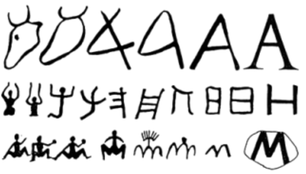
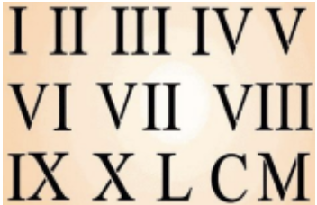
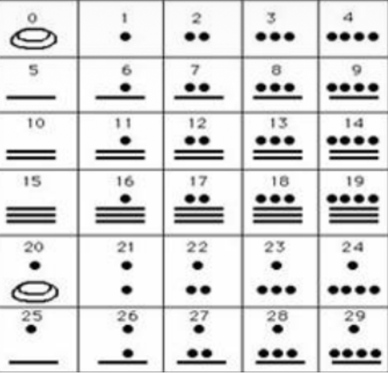

T01: Sistemas de numeración¶
En esta teoría, se describen los diferentes sistemas numéricos.
Sistemas numéricos antiguos¶
Cuando los hombres empezaron a contar usaron los dedos, guijarros, palitos, rosarios de cuentas, palos con muescas, cordeles con nudos y algunas otras formas más para ir pasando de un número al siguiente.
Después se comenzó a concebir números cada vez más amplios y el hombre tuvo muchas dificultades con estos símbolos, por lo que recurrió a un sistema de representación más práctico.
{kind=link}

Sistema numérico antiguo¶
En diferentes partes del mundo y en distintas épocas se llegó a la misma solución, cuando se alcanza un determinado número se hace una marca distinta que los representa a todos ellos. Este número se le denomina base, en otras palabras hacer varios grupos de elementos con la misma cantidad.
¿Qué es la base en los sistemas numéricos?
La base indica el número de cifras o dígitos que usa un conjunto de símbolos y reglas que permiten representar datos numéricos (llamado Sistema numérico).
Por ejemplo:
Si es base 6, el sistema numérico tendrá 6 cifras o dígitos que son 0, 1, 2, 3, 4 y 5;
Si es base 3 los dígitos serán 0, 1 y 2; y así sucesivamente.
Las bases más conocidas son:
BASE |
Representación |
Símbolos |
|---|---|---|
decimal |
10 |
|
binario |
2 |
|
hexadecimal |
16 |
|
Para representar el sistema numérico de un número, se añade la base como subíndice a la derecha del número. Por ejemplo:
Sistema numérico |
Base |
Ejemplo |
|---|---|---|
DECIMAL |
10 |
\(12000_{(10)}\) |
BANARIO |
2 |
\(1010_{(2)}\) |
HEXADECIMAL |
16 |
\(4FC1D_{(16)}\) |
La base decimal
La base que más se ha utilizado a lo largo de la Historia es la base 10 porque los objetos inmediatos que ha tenido y que tiene el hombre para contar son los dedos de las manos y hasta de los pies.
Los sistemas numéricos pueden clasificarse en dos grupos: no-posicionales y posicionales.
Sistemas numéricos no posicionales (aditivos)¶
En los sistemas numéricos no-posicionales, el valor del símbolo utilizado no depende de la posición que ocupa en la expresión del número.
También se le conoce como el sistema aditivo, en él se suman los valores de todos los símbolos para obtener una cantidad total.
Sistema numérico Romano (I, V, X, L, C, D, M)¶
{kind=link}

Sistema numérico romano¶
Un ejemplo de sistema aditivo es el sistema numérico romano. En este sistema los diferentes símbolos representan cantidades. En el número romano XIX (19), el símbolo X(10) del inicio y el mismo símbolo X(10) del final del número, equivalen siempre al mismo valor, sin importar su posición. El el sistema numérico romano no existe el número cero.
Sistema numérico Maya (., ___, 🫓)¶
{kind=link}

Sistema numérico maya¶
Otro ejemplo de sistema aditivo es el sistema numérico maya, en el que se estableció un símbolo para representar el cero, este sistema es de base 20, y los 20 símbolos correspondientes se obtienen a partir de la combinación de tres símbolos básicos (., ___, 🫓).
Sistemas numéricos posicionales¶
En los sistemas numéricos posicionales el valor de un símbolo depende tanto del símbolo utilizado, como de la posición que el símbolo ocupa.
Sistema numérico decimal¶
El sistema decimal se usa en forma rutinaria para la representación de cantidades mediante los caracteres 0, 1, 2, 3, 4, 5, 6, 7, 8, 9.
Con estas cifras se pueden expresar cantidades hasta el 9, para expresar cantidades más allá de este número es necesario introducir la representación posicional, es decir, a cada cifra se le asigna un valor posicional determinado de acuerdo con el lugar que ocupa dentro del número.
\(1 = 10^{0} → \) uno
\(10 = 10^{1} → \) diez
\(100 = 10^{2} → \) cien
\(1,000 = 10^{3} → \) mil
\(10,000 = 10^{4} → \) diez mil
\(100,000 = 10^{5} → \) cien mil
\(1,000,000 = 10^{6} → \) un millón
Un número decimal se puede representar en potencias de base diez. Por ejemplo:
EJEMPLO
Convertir el siguiente número decimal a potencias en base diez:
Se toma cada número y se multiplica por su cifra significativa:
Sistema numérico binario¶
El sistema numérico binario, es un sistema posicional (cada cifra representa un valor representativo dependiendo en la posición en que se encuentre) que utiliza sólo dos símbolos para representar un número, el número 0 y el número 1.
Este sistema (así como en el sistema decimal) también está arraigado a un hecho anatómico: dos manos, dos brazos, dos ojos, dos piernas, entre otras partes del cuerpo; este sistema fue usado en algunas tribus hace siglos y actualmente es el sistema que usado por las computadoras.
Número binario |
Representación decimal |
|---|---|
0000 0000 |
0 |
0000 0001 |
1 |
0000 0010 |
2 |
0000 0011 |
3 |
0000 0100 |
4 |
0000 0101 |
5 |
0000 0110 |
6 |
0000 0111 |
7 |
0000 1000 |
8 |
0000 1001 |
9 |
0000 1010 |
10 |
0000 1011 |
11 |
0000 1100 |
12 |
0000 1101 |
13 |
0000 1110 |
14 |
0000 1111 |
15 |
0001 0000 |
16 |
⇣ |
⇣ |
0010 0000 |
32 |
⇣ |
⇣ |
0100 0000 |
64 |
⇣ |
⇣ |
1000 0000 |
128 |
EJEMPLO conversión de sistema binario a sistema decimal
Convertir el siguiente número binario a número decimal:
Teniendo en cuenta la representación decimal de los números binarios, se asigna su representación decimal por cada número binario así:
1 |
0 |
1 |
0 |
1 |
1 |
0 |
0 |
|---|---|---|---|---|---|---|---|
128 |
64 |
32 |
16 |
8 |
4 |
2 |
1 |
128 |
0 |
32 |
0 |
8 |
4 |
0 |
0 |
Ahora se suman los números:
\(= 128 + 0 + 32 + 0 + 8 + 4 + 0 + 0\)
\(= 160 + 12\)
\(= 172_{(10)}\)
De esta forma, la representación decimal del número binario: \(10101100_{(2)}\) es: \(172_{(10)}\)
Sistema numérico hexadecimal¶
La base numérica del sistema hexadecimal es 16.
Para representar cantidades, se utilizan los diez dígitos del sistema decimal y las seis primeras letras del alfabeto. Con esto pueden formarse números según el principio de valor posicional como en los demás sistemas numéricos.
Los números binarios se pueden agrupar en secuencias de cuatro bits y cada secuencia representa un número hexadecimal. Con ello, a partir de una larga secuencia de unos y ceros se obtiene un número hexadecimal más breve, que puede dividirse en grupos de dos o cuatro.
Utilidad de los números hexadecimales
El sistema numérico hexadecimal se utiliza en la informática para facilitar la legibilidad de números grandes o secuencias de bits largas. Los números hexadecimales se utilizan para:
Direcciones de origen y de destino de protocolos de Internet (IP).
Códigos ASCII.
Descripción de los códigos de color en diseño web con el lenguaje de hojas de estilo CSS.
Número hexadecimal |
Número binario |
Número decimal |
|---|---|---|
0 |
0000 |
0 |
1 |
0001 |
1 |
2 |
0010 |
2 |
3 |
0011 |
3 |
4 |
0100 |
4 |
5 |
0101 |
5 |
6 |
0110 |
6 |
7 |
0111 |
7 |
8 |
1000 |
8 |
9 |
1001 |
9 |
A |
1010 |
10 |
B |
1011 |
11 |
C |
1100 |
12 |
D |
1101 |
13 |
E |
1110 |
14 |
F |
1111 |
15 |
EJEMPLO: Conversión de sistema numérico binario a sistema numérico hexadecimal
Convertir el siguiente número binario a número hexadecimal:
\(10101100_{(2)}\)
Primero se separa el número en grupos de 4 dígitos. En este caso:
\(1010_{(2)}\) \(1100_{(2)}\)
Ahora se le asigna a cada grupo su representación hexadecimal:
1010 |
1100 |
|---|---|
A |
C |
El resultado es:
\(= AC_{(16)}\)